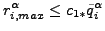

For network iterations two kinds of convergence criteria are applied: the residuals and the change in the solution must be both small enough.
For the mass and energy flow residuals
 and
and
 are calculated as specified in Equations (434) and
(435) with
are calculated as specified in Equations (434) and
(435) with  and
and
 equal to the mass flow (unit of
mass/unit of time) and the energy flow (unit of energy/unit of time). For the
element equation
equal to the mass flow (unit of
mass/unit of time) and the energy flow (unit of energy/unit of time). For the
element equation
 is taken to be 1 (the element
equation is dimensionless) and
is taken to be 1 (the element
equation is dimensionless) and
 is calculated based on the
element equation residuals. The residual check amounts to
is calculated based on the
element equation residuals. The residual check amounts to
|  | (444) |
where  takes the value
takes the value  ,
,  and
and  for the energy
balance, mass balance and element equation, respectively.
for the energy
balance, mass balance and element equation, respectively.
In the same way the maximum change in solution in network iteration i
 is compared with the maximum change in the solution
since the start of the network iterations, i.e. the solution at the end of
iteration i minus the solution at the beginning of the increment(before
network iteration 1). This is done separately for the temperature, the mass
flow, the pressure and the geometry. It amounts to the equation:
is compared with the maximum change in the solution
since the start of the network iterations, i.e. the solution at the end of
iteration i minus the solution at the beginning of the increment(before
network iteration 1). This is done separately for the temperature, the mass
flow, the pressure and the geometry. It amounts to the equation:
| (445) |
where  takes the value
takes the value  ,
,  ,
,  and
and  for
the temperature, the mass flow, the pressure and the geometry,
respectively.
for
the temperature, the mass flow, the pressure and the geometry,
respectively.
The parameters  ,
,  ,
,  ,
,  ,
,  ,
,  and
and
 can be changed using the *CONTROLS,PARAMETERS=NETWORK card.
can be changed using the *CONTROLS,PARAMETERS=NETWORK card.
Both criteria are important. A convergent solution with divergent residuals points to a local minimum, convergent residuals with a divergent solution point to a singular equation system (i.e. infinitely many solutions).